Foto- en videospecialist in Zwolle
Eerst in de hand, dan pas in de tas.
Camera's, lenzen en tassen pakt u bij ons gewoon zelf op. Twijfelt u? Vraag het aan de toonbank. En voor een pasfoto loopt u zo binnen aan de Dijkstraat.
4 van 5 uit 358 Google-reviews
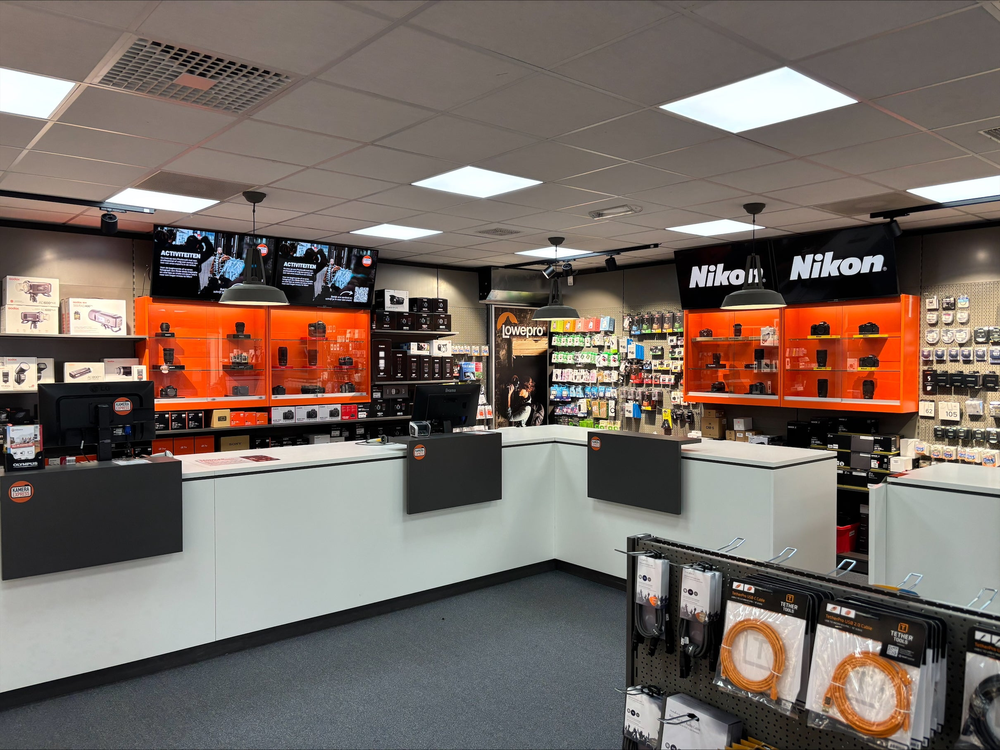
Een winkel om in rond te kijken.
Op een website ziet u een plaatje. Bij ons in Zwolle voelt u hoe zwaar een lens is, hoe een grip in uw hand ligt en of die tas echt bij uw spullen past. Neem de tijd, er is genoeg te zien.
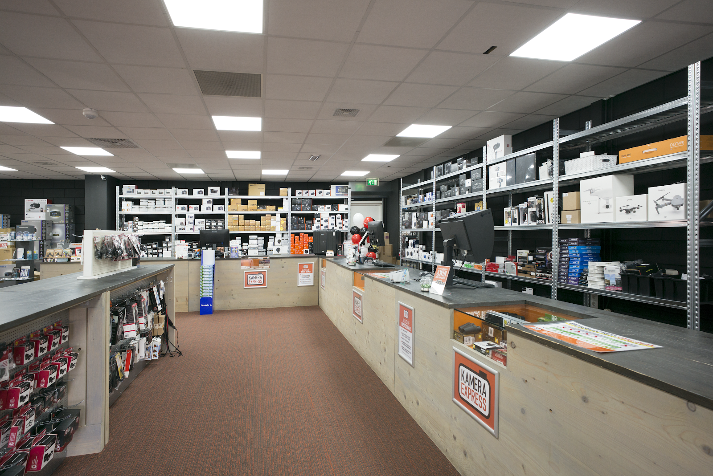
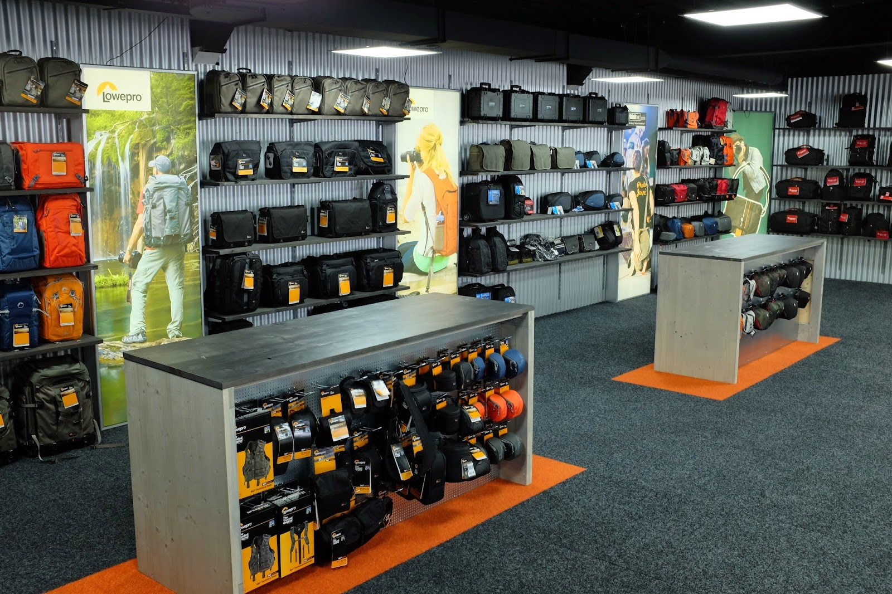
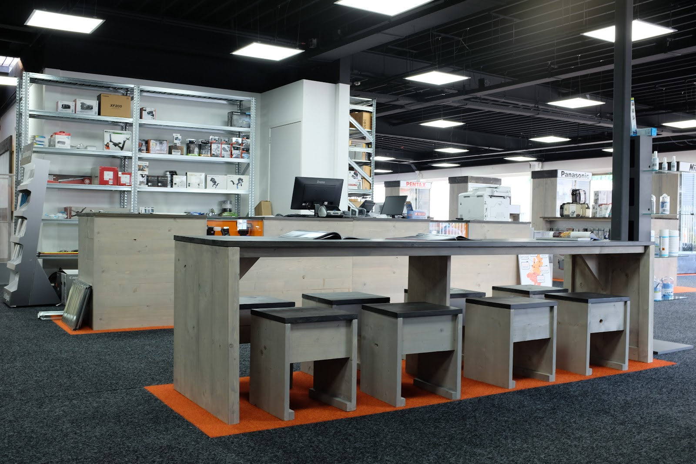
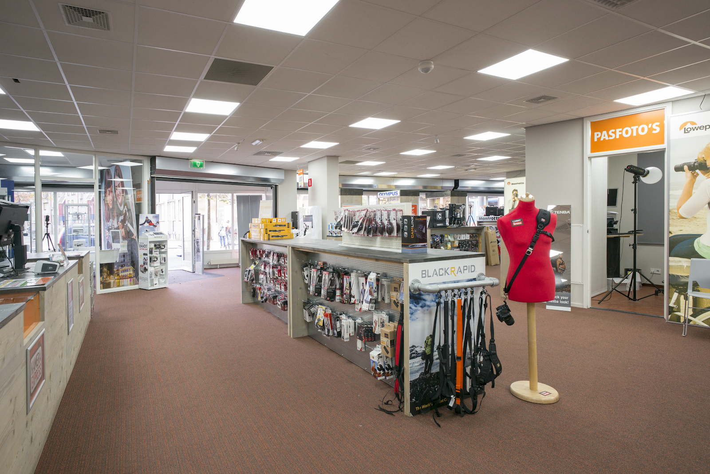
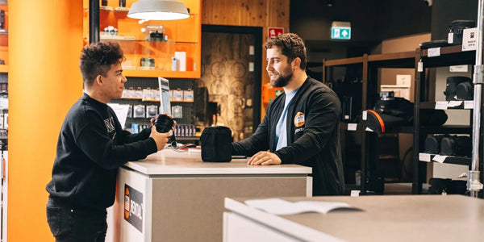
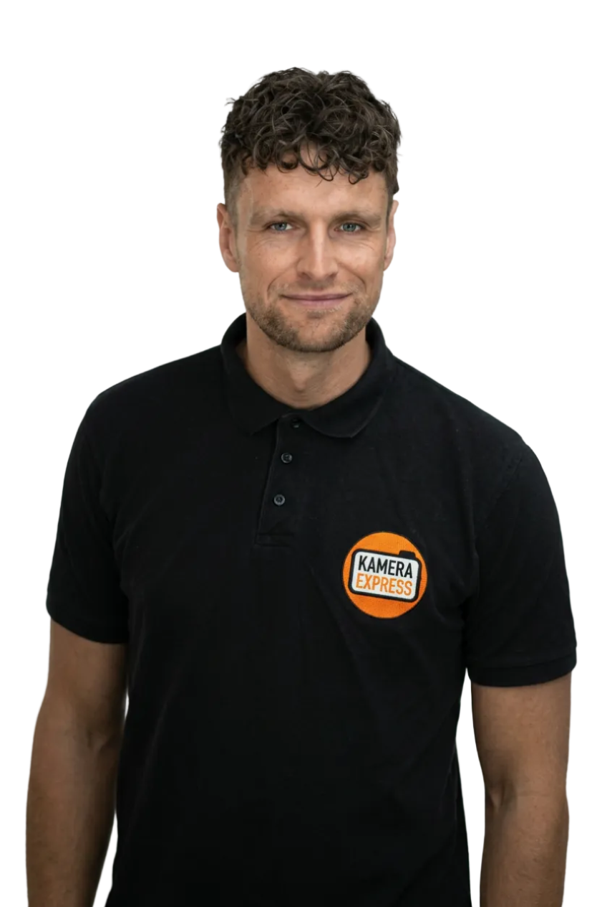
Even overleggen aan de toonbank.
Wat wilt u vastleggen: de kinderen op het sportveld, een verre reis of uw eerste bruiloft als fotograaf? Vertel het aan de toonbank, dan pakken we er een paar camera's bij die passen. Zo vergelijkt u ze naast elkaar, in het echt.
Liever eerst even bellen of iets op voorraad is? Dat kan natuurlijk ook.
Bel de winkel: 038 833 0199Pasfoto nodig? Loop gerust binnen.
Voor uw paspoort, rijbewijs of ID-kaart maken we de pasfoto in de pasfotohoek achter in de winkel. U kijkt mee en kiest zelf de foto die u het mooist vindt.
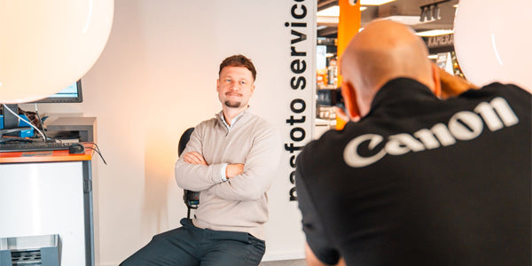
"Vandaag een pasfoto laten maken, personeel was erg vriendelijk en behulpzaam. Er werd rustig de tijd genomen en er werden meerdere foto's gemaakt totdat ik eentje leuk vond. Ook de pasfoto op 1 maat groter laten afdrukken was geen probleem. Helemaal blij mee."
Ook voor uw foto's, film en oude video's.
Niet alleen voor nieuwe spullen. Neem mee wat u heeft en vraag aan de balie wat er mogelijk is.
-
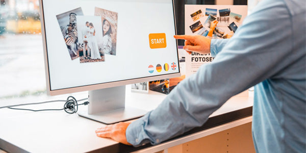
Foto's afdrukken
Uw foto's van telefoon of camera op papier, aan het fotoscherm in de winkel.
-
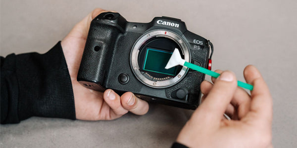
Sensor reinigen
Vlekjes op elke foto op dezelfde plek? Dan zit er stof op de sensor. Breng uw camera mee.
-
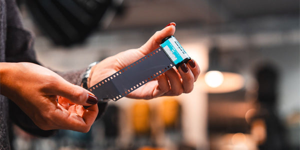
Analoge film
Nog een rolletje in de kast of fotografeert u weer analoog? Kom ermee langs.
-
Video digitaliseren
Oude videobanden met vakanties en verjaardagen, straks gewoon terug te kijken op uw laptop of tv.
Tot ziens aan de Dijkstraat.
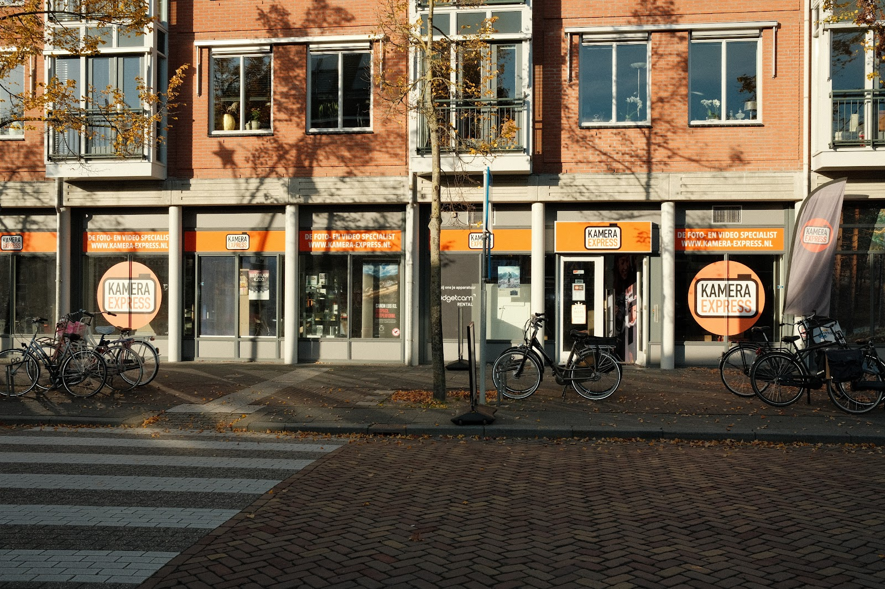
Adres
Dijkstraat 498011 XS Zwolle Plan uw route
Openingstijden
| Maandag | 09:30 tot 18:00 |
| Dinsdag | 09:30 tot 18:00 |
| Woensdag | 09:30 tot 18:00 |
| Donderdag | 09:30 tot 18:00 |
| Vrijdag | 09:30 tot 18:00 |
| Zaterdag | 09:00 tot 17:00 |
| Zondag | 11:00 tot 17:00 |
Ook op zondag open.